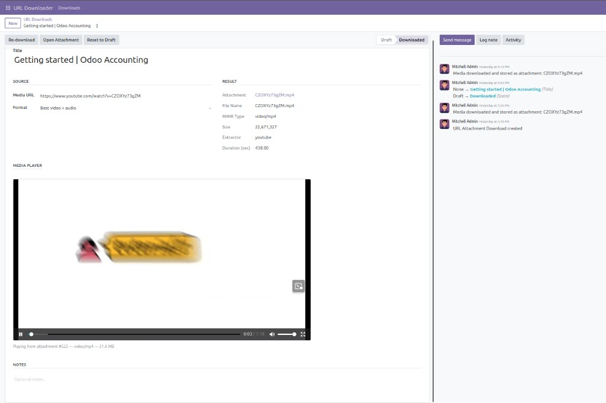
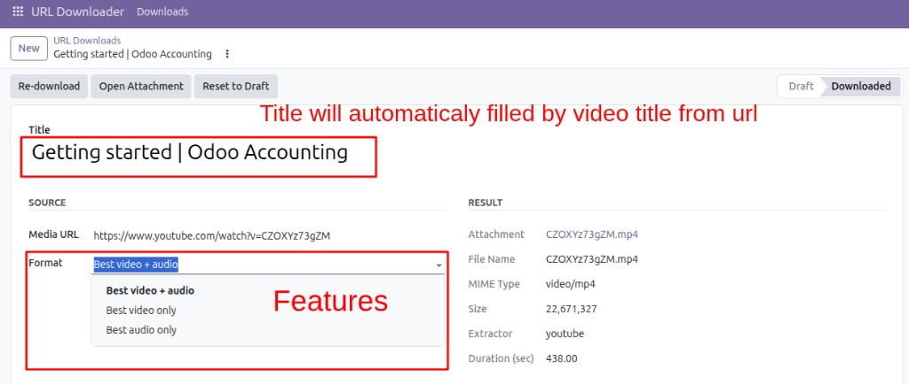
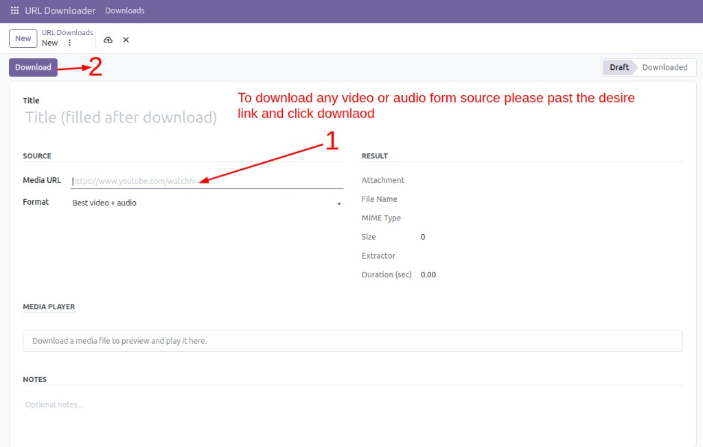

URL Attachment Downloader helps your team collect online media into Odoo in one click. Paste a public media URL, download it with yt-dlp, store it as an Odoo attachment, and preview/play it with the built-in OWL media player.
Note: Requires yt-dlp and ffmpeg on the Odoo server.
See the Installation section below.

Works with public media URLs from popular platforms, powered by yt-dlp extractors.
Support depends on yt-dlp extractors and website availability. DRM-protected platforms (for example Netflix / Disney+ / Amazon Prime) are not supported.

After installing this app from Odoo Apps, complete the server-side setup below. These dependencies are required for downloads to work on your Odoo server.
Installed automatically: base, mail, web
Install yt-dlp on the same Python environment used by Odoo:
pip install -U yt-dlp # If your OS blocks system pip: pip3 install -U yt-dlp --break-system-packages
Install ffmpeg to merge video + audio streams (needed for many YouTube downloads):
# Debian / Ubuntu sudo apt-get update sudo apt-get install -y ffmpeg
Restart your Odoo service after installing the packages, then open URL Downloader → Downloads.
docker exec -u root YOUR_ODOO_CONTAINER pip3 install -U yt-dlp --break-system-packages docker exec -u root YOUR_ODOO_CONTAINER apt-get update docker exec -u root YOUR_ODOO_CONTAINER apt-get install -y ffmpeg docker restart YOUR_ODOO_CONTAINER
ir.attachment).yt_dlp.ffmpeg.Only download media you own or are authorized to use. Respect website terms of service and copyright laws in your country. The author is not responsible for misuse of this module.
Need help with installation or configuration? Contact us at engrmuhammadawais2000@gmail.com.